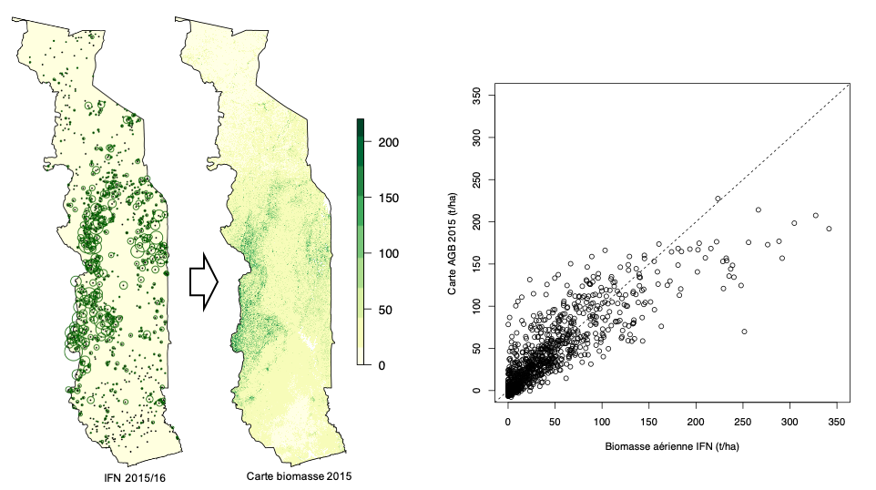
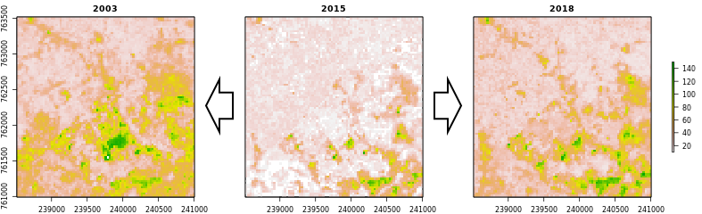

4.2.2 Calibration et prédiction
Description
A partir de la biomasse aérienne déterminée sur les parcelles IFN en 2015/16 (t/ha matière sèche), un modèle de biomasse est calibré sur bases de l’image satellitaire Landsat de 2015 (bandes et indices B, G, R, NIR, SWIR1, SWIR2, nbr, ndmi, ndvi, evi) et les données climatiques Worldclim (BIO1, BIO4, BIO12, BIO15). Ce sont les mêmes variables qui ont déjà été utilisées pour la classification forêt/non-forêt.
Dans une première étape, les variables sont extraites, c’est-à-dire que les valeurs des pixels sous les rayons des parcelles sont lues à partir des images Landsat et Worldclim et moyennées en conséquence. Ensuite, les variable sont mis en correspandance avec les biomasses aériennes à travers un modèle de régression RandomForest. Ce modèle est utilisé pour créer une carte de la biomasse aérienne pour l’année 2015.
En supposant que la biomasse sur la plupart des pixels reste constante, la carte de la biomasse aérienne 2015 est utilisée comme base pour calibrer des cartes pour les années 2003 et 2018 (début et fin de la période de référence) avec la même méthode: 0,1% des pixels de la carte de la biomasse 2015 (environ 100 000 pixels) sont utilisés comme pixels d’entraînement pour la calibration d’un modèle RandomForest qui est ensuite utilisé pour la production de la carte.
4.2.2.1 Example
Répartition spatiale des 945 placettes d’inventaire de l’IFN-1 (la taille du cercle correspond à la biomasse trouvée sur les placettes) et carte de la biomasse aérienne résultant. Le diagramme de dispersion montre la correlation entre la biomasse sur la carte et celle trouvé sur les parcelles de l’IFN (R2 = 70.7%). La carte sous-estime les fortes biomasses (effet de saturation).

Utilisation de la carte de biomasse 2015 comme référence pour la calibration des cartes 2003 et 2018. Le détail montre une région au sud de Kpalimé.

Script R: 03_NRF-MRV/02_AGB/_src/02_create-AGB-maps.R
###############################################################################
# 02_create-AGB-maps.R: Modélisation et création des cartes de biomasse
# -----------------------------------------------------------------------------
# Bern University of Applied Sciences
# Oliver Gardi, <oliver.gardi@bfh.ch>
# 13 Mai 2020
# Définitions des variables ===================================================
AGB.STRATA <- 10 # Nombre de strates de biomasse pour l'échantillonnage
N.PIXELS <- NA # Nombre de pixels non-NA (sera déterminé plus tard)
SAMPLE.RATIO <- 0.001 # Rapport des pixels non-NA à échantilloner
CAL.RATIO <- 1 # Rapport des pixels à échantillonner pour la calibration
# Bandes à utiliser pour la modélisation forêt vs. non-forêt
PREDICTORS <- c("B", "G", "R", "NIR", "SWIR1", "SWIR2",
"nbr", "ndmi", "ndvi", "evi",
"BIO1", "BIO4", "BIO12", "BIO15")
# Répertoires
LANDSAT.DIR <- DIR.SST.DAT.LST
WORLDCLIM.DIR <- DIR.SST.DAT.WC2
REF.DIR <- DIR.MRV.AGB.REF
# Définitions des fonctions ===================================================
# Charger un image Landsat ----------------------------------------------------
#
# @param filename Chemin du fichier landsat
#
# @return Image Landsat avec bandes nommées
#
load.image <- function(filename) {
image <- brick(paste0(LANDSAT.DIR, filename))
names(image) <- SST.LSBANDS
return(image)
}
# Prédiction d'une carte biomasse ---------------------------------------------
#
# @param image Image Landsat à classifier
# @param filename Nom de fichier pour la sauvegarde de la carte
# @param bioclim Raster des variables bioclimatiques à utiliser
# @param train.dat Tableau des données d'entraînement
# @param ref.map Carte de référence
# @param n.ref.map Nombre de points à échantilloner
# @param cal.map Carte de calibration (autre chemin WRS)
# @param n.cal.map Nombre de points à échantilloner
# @param mask Masque à utiliser pour ref.map et cal.map
# @param preds Variables à utiliser pour le modèle
# @param type Modèle de classification ou de regression
# @param crossval Faire validation croisée (3 * 10-fold)
# @param bias.corr Faire une correction linéaire du bias
# @param n.cores Nombre de processeurs à utiliser pour prédiction
#
# @return List avec les éléments
# - model RandomForest,
# - model linéaire du correction du bias
# - carte biomasse
#
agb.map <- function(image, filename, bioclim=NULL, train.dat=NULL,
ref.map=NULL, n.ref.map=NULL,
cal.map=NULL, n.cal.map=NULL,
mask=NULL, preds=NULL,
crossval=FALSE, bias.corr=TRUE, n.cores=8) {
# Ouvrir le fichier journal
name <- sub("[.]tif$", "", filename)
txtfile <- paste0(sub("[.]tif$", "", filename), ".txt")
cat("-- Biomass map: ", basename(filename), "/", date(), " --\n", file=txtfile)
# Tirer des données d'entraînement d'une carte de référence -------
if(!is.null(ref.map)) {
cat(paste0(" -Masking / buffering reference map ... \n"))
# ... couper/masquer avec l'image
ref.map <- mask(crop(ref.map, image[[1]]), crop(image[[1]], ref.map))
# ... et masque additionelle (si disponible)
if(!is.null(mask)) ref.map <- mask(ref.map, mask)
# Découper la carte de calibration (si disponible)
if(!is.null(cal.map)) {
tmp <- extend(crop(cal.map, ref.map), ref.map)
ref.map <- mask(ref.map, tmp, inverse=TRUE)
}
cat(" ")
# Tirer des points d'échantillon (stratifié selon classe biomasse) ...
cat(paste0(" -Sampling map (n=", AGB.STRATA, "*", round(n.ref.map/AGB.STRATA), ") ... "))
ref.pts <- sampleStratified(cut(ref.map, AGB.STRATA),
round(n.ref.map/AGB.STRATA), sp=TRUE)[,-1]
names(ref.pts) <- "AGB"
# ... extraire les valeurs spectrales et bioclimatique correspondantes ...
cat("extracting values ... \n")
ref.dat <- cbind(AGB=raster::extract(ref.map, ref.pts, df=TRUE)[,-1],
raster::extract(image, ref.pts, df=TRUE)[,-1],
raster::extract(bioclim, ref.pts, df=TRUE)[,-1])
cat("Ref-map points: ", nrow(ref.dat), "/", ref.map@file@name, file=txtfile, append=TRUE)
# ... et ajouter aux données d'entraînement (si disponible)
if(is.null(train.dat)) {
train.dat <- ref.dat
} else {
train.dat <- rbind(train.dat, ref.dat)
}
}
# Ajouter des points d'une carte de calibration -------------------
if(!is.null(cal.map)) {
cat(paste0(" -Masking calibration map ... \n"))
# ... couper/masquer avec l'image
cal.map <- mask(crop(cal.map, image[[1]]), crop(image[[1]], cal.map))
# ... et masque additionelle (si disponible)
if(!is.null(mask)) cal.map <- mask(cal.map, mask)
# Tirer des points d'échantillon (stratifié selon classe biomasse) ...
cat(paste0(" -Sampling map (n=", AGB.STRATA, "*", round(n.cal.map/AGB.STRATA), ") ... "))
cal.pts <- sampleStratified(cut(cal.map, AGB.STRATA),
round(n.cal.map/AGB.STRATA), sp=TRUE)[,-1]
names(cal.pts) <- "AGB"
# ... extraire les valeurs spectrales et bioclimatique correspondantes ...
cat("extracting values ... \n")
cal.dat <- cbind(AGB=raster::extract(cal.map, cal.pts, df=TRUE)[,-1],
raster::extract(image, cal.pts, df=TRUE)[,-1],
raster::extract(bioclim, cal.pts, df=TRUE)[,-1])
# ... et ajouter aux points d'entraînement
if(is.null(train.dat)) {
train.dat <- cal.dat
} else {
train.dat <- rbind(train.dat, cal.dat)
}
cat("Cal-map points: ", nrow(cal.dat),
"from", cal.map@file@name, file=txtfile, append=TRUE)
}
# Nombre total des points d'entraînement
cat("Total points: ", nrow(train.dat), "\n", file=txtfile, append=TRUE)
# Calibration du modèle Random Forest -----------------------------
# Utiliser toutes les variables si non-spécifiées dans les paramètres
if(is.null(preds)) {
preds <- names(image)
if(!is.null(bioclim)) preds <- c(preds, names(bioclim))
}
# calibrer RandomForest (mode de régression)
cat(" -Calibrating RandomForest ... ")
sink(txtfile, append=TRUE)
# Utiliser caret::train pour validation croisée (a besoin de beaucoup de temps)
if(crossval) {
map.model.cv <- train(y = train.dat[,1],
x = train.dat[,preds],
method = "rf", # RandomForest
importance = TRUE,
trControl = trainControl(
method = "repeatedcv",
number = 10, # k-fold
repeats = 3)) # répétitions
print(map.model.cv)
map.model <- map.model.cv$finalModel
print(map.model)
cat("\n")
print(varImp(map.model, scale=FALSE))
# autrement randomForest directement
} else {
map.model <- randomForest(y=train.dat[,1], x=train.dat[,preds],
importance=TRUE) # , do.trace=100)
print(map.model)
cat("\n")
print(varImp(map.model))
}
sink()
# Mesures des erreurs
cat("R2:", round(map.model$rsq[500], 2),
"RMSE:", round(sqrt(map.model$mse[500]), 2), "\n")
# Model linéaire de correction du bias
if(bias.corr) {
bc <- lm(train.dat$AGB ~ map.model$predicted)
sink(paste0(name, "_bc.txt"), split=TRUE)
print(summary(bc))
sink()
save(bc, file=paste0(name, "_bc.RData"))
} else {
bc <- NULL
}
# Diagramme de dispersion prédiction vs. observation
pdf(paste0(name, ".pdf"))
plot(train.dat$AGB ~ map.model$predicted,
ylab="AGB (tDM/ha)", xlab="Predicted AGB (tDM/ha)")
abline(0,1, lty=2)
if(bias.corr) {
abline(bc, lty=3, col="red")
}
dev.off()
# Classification de la carte biomasse -----------------------------
dir.create(dirname(filename), recursive=TRUE, showWarnings=FALSE)
cat(" -Creating map ... ")
# empiler les couches Landsat et bioclim
if(!is.null(bioclim)) image <- stack(image, crop(bioclim, image))
# classifier l'image sur différents procésseurs en parallèle
beginCluster(n=n.cores)
map <- clusterR(image, predict, args=list(model=map.model))
endCluster()
# appliquer la correction du bias (si disponible)
if(bias.corr) {
cat("Applying linear bias correction ...")
map <- calc(map, fun=function(x){bc$coefficients[1] + bc$coefficients[2]*x})
}
# sauvegarder la carte
cat("writing map ... ")
map <- writeRaster(map, filename=filename,
format="GTiff", datatype="INT2U", overwrite=TRUE)
cat("done\n")
cat("-- Done: ", basename(filename), "/", date(), " --\n", file=txtfile, append=TRUE)
invisible(list(
"rf.model" = map.model,
"bc.model" = bc,
"map" = map
))
}
# COMMENCER LE TRAITEMENT #####################################################
# Carte de référence 2015 =====================================================
# Charger images 2015 ---------------------------------------------------------
ref.p192 <- brick(paste0(IMAGES.DIR, "/p192/p192_2015_m.tif"))
ref.p193 <- brick(paste0(IMAGES.DIR, "/p193/p193_2015_m.tif"))
ref.p194 <- brick(paste0(IMAGES.DIR, "/p194/p194_2015_m.tif"))
names(ref.p192) <- names(ref.p193) <- names(ref.p194) <- BANDS
ref.images <- list(p192=ref.p192, p193=ref.p193, p194=ref.p194)
# Détérminer le nombre de pixels non-NA
N.PIXELS <- list(p192 = ncell(ref.p192[["B"]]) - summary(ref.p192)["NA's","B"],
p193 = ncell(ref.p193[["B"]]) - summary(ref.p193)["NA's","B"],
p194 = ncell(ref.p194[["B"]]) - summary(ref.p194)["NA's","B"])
# Charger variables bioclim
bioclim.p192 <- brick(paste0(IMAGES.DIR, "/p192/p192_bioclim.tif"))
bioclim.p193 <- brick(paste0(IMAGES.DIR, "/p193/p193_bioclim.tif"))
bioclim.p194 <- brick(paste0(IMAGES.DIR, "/p194/p194_bioclim.tif"))
names(bioclim.p192) <- names(bioclim.p193) <- names(bioclim.p194) <- BIOCLIM
bioclim <- list(p192=bioclim.p192, p193=bioclim.p193, p194=bioclim.p194)
# Charger les données d'inventaire --------------------------------------------
plots <- read.csv(paste0(REF.DIR, "/IFN-plots.csv")) # , fileEncoding="macintosh")
# Convertir en points spatiales en utilisant les coordonnées
coordinates(plots) <- ~X+Y
proj4string(plots) <- utm.31
# Figure de distribution spatiale des points
pdf(paste0(REF.DIR, "/IFN-plots_location.pdf"),
width=3.5, height=7)
par(mar=c(1,1,1,1))
plot(spTransform(TGO, utm.31), col="lightyellow")
plot(plots, add=TRUE, col="black", pch=16, cex=0.3)
plot(plots, add=TRUE, col="darkgreen", pch=1, cex=plots$AGB/100)
dev.off()
# Convertir les polygones des parcelles en points spatiaux (centroïdes)
plots.poly <- SpatialPolygonsDataFrame(gBuffer(plots, byid=TRUE, width=20), plots@data)
# Extraire les valeurs spéctrales pour les parcelles IFN ----------------------
registerDoParallel(CORES)
# ... pour chaque image Landsat (chemin WRS) ...
x <- foreach(i=1:length(ref.images), .combine=cbind) %:%
# ... et pour chaque couche spéctrale (bandes et indices) ...
foreach(j=1:nlayers(ref.images[[i]]), .combine=cbind) %dopar% {
# ... calculer la valeur moyenne pondérée au dessous de la parcelle IFN
raster::extract(ref.images[[i]][[j]], plots.poly, weights=TRUE, fun=mean, df=TRUE)[,2]
}
# Extraire les valeurs bioclimatiques pour les parcelles IFN (en parallèle)
x2 <- foreach(i=1:length(bioclim), .combine=cbind) %:%
foreach(j=1:nlayers(bioclim[[i]]), .combine=cbind) %dopar% {
raster::extract(bioclim[[i]][[j]], plots, df=TRUE)[,2]
}
# Séparer les données d'entraînement selon les différents chemins WRS
# (13 variables spéctrales et 19 variables bioclim pour chaque chemin WRS)
dat.p192 <- na.omit(as.data.frame(cbind(plots$AGB, x[,1:13], x2[,1:19])))
dat.p193 <- na.omit(as.data.frame(cbind(plots$AGB, x[,14:26], x2[,20:38])))
dat.p194 <- na.omit(as.data.frame(cbind(plots$AGB, x[,27:39], x2[,39:57])))
names(dat.p192) <- names(dat.p193) <- names(dat.p194) <- c("AGB", SSTS.LSBANDS, SSTS.BIOCLIM)
train.data <- list(p192=dat.p192, p193=dat.p193, p194=dat.p194)
# Séléction des variables explicatives ----------------------------------------
# TODO: inclure la carte de régénération comme prédicteur !
agb.varsel <- rfe(y = dat.p193[,1], # biomasse (1ère colonne)
x = dat.p193[,-1], # prédicteurs (reste)
sizes = c(4, 6, 8, 10),
rfeControl = rfeControl(
functions = rfFuncs, # utiliser RandomForest
method = "repeatedcv", # validation croisée
number = 10, # 10-fold
repeats = 3)) # 3 répétitions
sink(paste0(REF.DIR, "/p193_2015_AGB_varsel-fin.txt"), split=TRUE)
predictors(agb.varsel)
print(agb.varsel)
sink()
pdf(paste0(REF.DIR, "/p193_2015_AGB_varsel-fin.pdf"))
plot(var.sel, type=c("g", "o"))
dev.off()
# Cartes de référence biomasse aérienne 2015 -------------------------------
# Chemin WRS p193
set.RSEED(RSEED)
p193.2015.agb <- agb.map(image = load.image("/p193/p193_2015_m.tif"),
bioclim = bioclim[["p193"]],
filename = paste0(REF.DIR, "/p193_2015_AGB_R.tif"),
train.dat = train.data[["p193"]],
preds = PREDICTORS,
crossval = TRUE,
bias.corr = FALSE,
n.cores = 32)
# Chemins WRS p192 and p194, utilisant p193 pour calibration
set.RSEED(RSEED)
p192.2015.agb <- agb.map(image = load.image("/p192/p192_2015_m.tif"),
bioclim = bioclim[["p192"]],
filename = paste0(REF.DIR, "/p192_2015_AGB_R.tif"),
train.dat = train.data[["p192"]],
# calibration avec carte p193 ...
cal.map = raster(paste0(REF.DIR, "/p193_2015_AGB_R.tif")),
# ... avec au moin 200 points
n.cal.map = max(200, nrow(train.data[["p192"]])*CAL.RATIO),
preds = PREDICTORS,
crossval = FALSE,
bias.corr = FALSE,
n.cores = 32,
mask = TGO)
set.RSEED(RSEED)
p194.2015.agb <- agb.map(image = load.image("/p194/p194_2015_m.tif"),
bioclim = bioclim[["p194"]],
filename = paste0(REF.DIR, "/p194_2015_AGB_R.tif"),
train.dat = train.data[["p194"]],
# calibration avec carte p193 ...
cal.map = raster(paste0(REF.DIR, "/p193_2015_AGB_R.tif")),
# ... avec au moin 200 points
n.cal.map = max(200, nrow(train.data[["p194"]])*CAL.RATIO),
preds = PREDICTORS,
crossval = FALSE,
bias.corr = FALSE,
n.cores = 32,
mask = TGO)
# Fusionner les cartes des chemins p192, p193 et p194
agb.2015 <- mask(crop(mosaic(raster(paste0(REF.DIR, "/p192_2015_AGB_R.tif")),
raster(paste0(REF.DIR, "/p193_2015_AGB_R.tif")),
raster(paste0(REF.DIR, "/p194_2015_AGB_R.tif")),
fun=mean), # valeur moyenne pour les superpositions
TGO),
TGO,
filename=paste0(REF.DIR, "/TGO_2015_AGB_R.tif"), overwrite=TRUE)
# Sauvgarder un image de la carte biomasse 2015
pdf(paste0(REF.DIR, "/TGO_2015_AGB_R.pdf"),
width=3.5, height=7)
par(mar=c(1,1,1,1))
plot(agb.2015, axes=FALSE, col=brewer.pal(9, "YlGn"), zlim=c(0,220))
plot(spTransform(TGO, utm.31), add=TRUE)
dev.off()
# Correction de la sous-estimation des valeurs biomasse élevés ----------------
# Diagramme de dispersion carte biomasse 2015 vs. observation parcelles IFN
plots.poly$AGB.pred <- raster::extract(agb.2015, plots.poly, weights=TRUE, fun=mean, df=TRUE)[,2]
pdf(paste0(REF.DIR, "/AGB-model_2015.pdf"))
plot(plots.poly$AGB.pred ~ plots.poly$AGB,
xlab="Biomasse aérienne IFN (t/ha)",
ylab="Carte AGB 2015 (t/ha)",
xlim=c(0,350), ylim=c(0,350))
abline(0, 1, lty="dashed")
dev.off()
# Correction pour réduire la sous-estimation des valeurs élevés
cv <- train(AGB ~ AGB.pred,
data=plots.poly@data[!is.na(plots.poly$AGB.pred),],
method = "lm", # régression linéaire
trControl = trainControl(
method = "cv", # validation croisée
number = 10)) # 10-fold
model <- lm(AGB ~ AGB.pred, data=plots.poly@data[!is.na(plots.poly$AGB.pred),])
sink(paste0(REF.DIR, "/TGO_2015_AGB_Rc.txt"), split=TRUE)
print(cv)
summary(model)
sink()
agb.2015 <- writeRaster(model$coefficients["(Intercept)"] + model$coefficients["AGB.pred"] * agb.2015,
paste0(REF.DIR, "/TGO_2015_AGB_R.tif"), overwrite=TRUE)
# Diagramme de dispersion carte biomasse 2015 corrigé vs. observation parcelles IFN
agb.pred.c <- raster::extract(agb.2015, plots.poly, weights=TRUE, fun=mean, df=TRUE)[,2]
pdf(paste0(REF.DIR, "/AGB-model_2015_c.pdf"))
plot(agb.pred ~ plots.poly$AGB,
xlab="Biomasse aérienne IFN (t/ha)",
ylab="Carte AGB 2015 (t/ha)",
xlim=c(0,350), ylim=c(0,350))
abline(0, 1, lty="dashed")
dev.off()
# Carte biomasse 2003 (sur base de la carte 2015) =============================
# Chemins WRS p193
set.RSEED(RSEED)
p193.2003.agb <- agb.map(image = load.image("/p193/p193_2003_m.tif"),
bioclim = bioclim[["p193"]],
filename = paste0(REF.DIR, "/p193_2003_AGB_R.tif"),
train.dat = NULL,
ref.map = raster(paste0(REF.DIR, "/TGO_2015_AGB_R.tif")),
n.ref.map = SAMPLE.RATIO * N.PIXELS[["p193"]],
preds = PREDICTORS,
crossval = FALSE,
bias.corr = TRUE,
n.cores = 32)
# Chemins WRS p192 and p194, utilisant p193 pour calibration
set.RSEED(RSEED)
p192.2003.agb <- agb.map(image = load.image("/p192/p192_2003_m.tif"),
bioclim = bioclim[["p192"]],
filename = paste0(REF.DIR, "/p192_2003_AGB_R.tif"),
train.dat = NULL,
ref.map = raster(paste0(REF.DIR, "/TGO_2015_AGB_R.tif")),
n.ref.map = SAMPLE.RATIO * N.PIXELS[["p192"]] / (1 + CAL.RATIO),
cal.map = raster(paste0(REF.DIR, "/p193_2003_AGB_R.tif")),
n.cal.map = SAMPLE.RATIO * N.PIXELS[["p192"]] / (1 + 1/CAL.RATIO),
preds = PREDICTORS,
crossval = FALSE,
bias.corr = FALSE,
n.cores = 32,
mask = TGO)
set.RSEED(RSEED)
p194.2003.agb <- agb.map(image = load.image("/p194/p194_2003_m.tif"),
bioclim = bioclim[["p194"]],
filename = paste0(REF.DIR, "/p194_2003_AGB_R.tif"),
train.dat = NULL,
ref.map = raster(paste0(REF.DIR, "/TGO_2015_AGB_R.tif")),
n.ref.map = SAMPLE.RATIO * N.PIXELS[["p194"]] / (1 + CAL.RATIO),
cal.map = raster(paste0(REF.DIR, "/p193_2003_AGB_R.tif")),
n.cal.map = SAMPLE.RATIO * N.PIXELS[["p194"]] / (1 + 1/CAL.RATIO),
preds = PREDICTORS,
crossval = FALSE,
bias.corr = FALSE,
n.cores = 32,
mask = TGO)
# Fusionner les cartes des chemins p192, p193 et p194
agb.2003 <- mask(crop(mosaic(raster(paste0(REF.DIR, "/p192_2003_AGB_R.tif")),
raster(paste0(REF.DIR, "/p193_2003_AGB_R.tif")),
raster(paste0(REF.DIR, "/p194_2003_AGB_R.tif")),
fun=mean),
TGO),
TGO,
filename=paste0(REF.DIR, "/TGO_2003_AGB_R.tif"), overwrite=TRUE)
# Carte biomasse 2003 (sur base de la carte 2015) =============================
# Chemins WRS p193
set.RSEED(RSEED)
p193.2018.agb <- agb.map(image = load.image("/p193/p193_2018_m.tif"),
bioclim = bioclim[["p193"]],
filename = paste0(REF.DIR, "/p193_2018_AGB_R.tif"),
train.dat = NULL,
ref.map = raster(paste0(REF.DIR, "/TGO_2015_AGB_R.tif")),
n.ref.map = SAMPLE.RATIO * N.PIXELS[["p193"]],
preds = PREDICTORS,
crossval = FALSE,
bias.corr = TRUE,
n.cores = 32)
# Chemins WRS p192 and p194, utilisant p193 pour calibration
set.RSEED(RSEED)
p192.2018.agb <- agb.map(image = load.image("/p192/p192_2018_m.tif"),
bioclim = bioclim[["p192"]],
filename = paste0(REF.DIR, "/p192_2018_AGB_R.tif"),
train.dat = NULL,
ref.map = raster(paste0(REF.DIR, "/TGO_2015_AGB_R.tif")),
n.ref.map = SAMPLE.RATIO * N.PIXELS[["p192"]] / (1 + CAL.RATIO),
cal.map = raster(paste0(REF.DIR, "/p193_2018_AGB_R.tif")),
n.cal.map = SAMPLE.RATIO * N.PIXELS[["p192"]] / (1 + 1/CAL.RATIO),
preds = PREDICTORS,
crossval = FALSE,
bias.corr = FALSE,
n.cores = 32,
mask = TGO)
set.RSEED(RSEED)
p194.2018.agb <- agb.map(image = load.image("/p194/p194_2018_m.tif"),
bioclim = bioclim[["p194"]],
filename = paste0(REF.DIR, "/p194_2018_AGB_R.tif"),
train.dat = NULL,
ref.map = raster(paste0(REF.DIR, "/TGO_2015_AGB_R.tif")),
n.ref.map = SAMPLE.RATIO * N.PIXELS[["p194"]] / (1 + CAL.RATIO),
cal.map = raster(paste0(REF.DIR, "/p193_2018_AGB_R.tif")),
n.cal.map = SAMPLE.RATIO * N.PIXELS[["p194"]] / (1 + 1/CAL.RATIO),
preds = PREDICTORS,
crossval = FALSE,
bias.corr = FALSE,
n.cores = 32,
mask = TGO)
# Fusionner les cartes des chemins p192, p193 et p194
agb.2018 <- mask(crop(mosaic(raster(paste0(REF.DIR, "/p192_2018_AGB_R.tif")),
raster(paste0(REF.DIR, "/p193_2018_AGB_R.tif")),
raster(paste0(REF.DIR, "/p194_2018_AGB_R.tif")),
fun=mean),
TGO),
TGO,
filename=paste0(REF.DIR, "/TGO_2018_AGB_R.tif"), overwrite=TRUE)